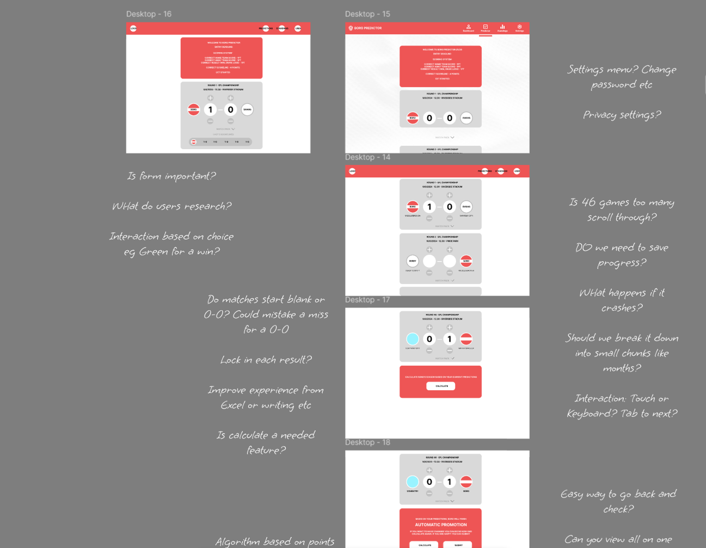
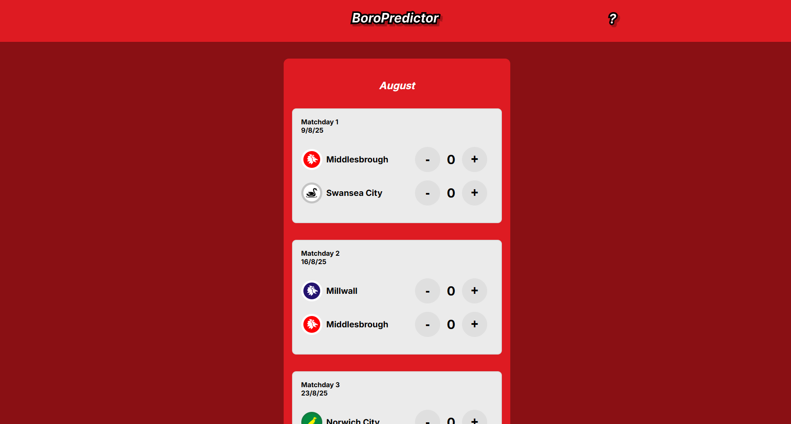

Your season, before a ball is kicked.
What started as a family prediction game run on a shared Excel spreadsheet grew into something more: a mobile-first web platform for Boro fans to predict all 46 Championship fixtures, track their season, and find out what kind of fan they really are. Built from scratch — design, product, and code.
Discovery
A group of family and friends had been running a season-long prediction game for years, all managed by one person. He built the spreadsheet, entered all 46 fixtures manually, emailed it to every player before the season started, and then — when files came back blank, formatted wrong, or not at all — chased them individually to fix it. The night before predictions locked was the worst: files arriving in the wrong format, scores entered as dates, back-and-forth that ate up the evening before a ball had been kicked.
The Excel workaround
The spreadsheet itself was carefully built — formula-driven, well organised. But the process around it introduced friction at every step: download, fill in, save, email back. On a desktop. Before the season started. For some players that was already one step too many.
One for the records
One family member — who will not be named — wrote all their scores on paper, photographed it, and texted it through. They missed two fixtures in the process. They still beat me in the final table. The workarounds people were inventing to participate showed how much they cared about the game itself. The spreadsheet was just getting in the way.
The old process
Manager creates spreadsheet
46 fixtures entered manually
Emails all players
File attached, instructions included
Players download, fill in, email back
Desktop only. No mobile option
Errors & chasing
Wrong formats, blank files, back-and-forth before the deadline
The night before
Despite the friction, players were invested enough to screenshot their own predictions and go back to check them throughout the season. The appetite to play was real — the process was just getting in the way.
What wasn't working
01
Reliance on desktop Excel
Participants had to download a spreadsheet, input scores, save the file, and email it back — introducing friction at every step. There was no mobile-friendly alternative, and most people only looked at their predictions a couple of times a season.
02
Tech literacy gaps
Some participants didn't have Excel. Others accidentally formatted scores as dates, or submitted blank files, creating confusion and back-and-forth for the game manager. The tool assumed a level of comfort with spreadsheets that not everyone had.
03
Numbers without a story
Even when it worked, the spreadsheet returned a number. It didn't tell you what kind of season you'd predicted, whether your gut matched your picks, or give you anything to feel. It was functional — and nothing more.
The opportunity
Not just a cleaner spreadsheet — a platform. One that handles the admin, opens the game to everyone regardless of their device, and turns a points tally into something a Boro fan actually wants to read.
Simplify the experience
Make it easy for everyone to enter predictions — especially those with limited digital experience. No downloads, no email, no formatting issues. Works on a phone.
Add enjoyment
Move beyond spreadsheets to something more visually engaging. Some players just want it to work on their phone; others love leaning into football data and want the depth to explore it. The design had to serve both — accessible to the casual player, rewarding for the stat-head.
Create value
With all predictions captured centrally, there's potential for storytelling. Turn the data into something — a leaderboard, a season narrative, a newspaper review. Something worth sharing.
Built to grow
Manageable for a family game this season. Scaleable to a full multi-club platform in future — without needing to rebuild from scratch.

Decisions that shaped it
1
From tool to platform
The original brief was simple: replace the Excel spreadsheet. Fix the friction. But with stronger skills and a clearer view of what the game could be, the scope expanded. The app now manages the whole prediction game — locking predictions before the season starts, collecting player registrations via Supabase, tracking a leaderboard, and surfacing the dashboard that keeps Boro fans honest to their predictions as the season unfolds. That shift from admin tool to platform changed every design decision that followed.
The locking mechanic is where the platform logic becomes concrete. Predictions lock the night before the season opener. Players are reminded through a deadline banner on the predictor page, a notification on the dashboard, and a pre-season newsletter. Locked-in status is visible on the account page. If a player doesn't submit in time, all their scores default to 0–0 — they've technically submitted, they've just not taken part. No overrides, no extensions. That firm boundary is what makes the game real.

The decision
Replacing a spreadsheet only solves the submission problem. Building a platform solves the whole game — locking predictions at the right moment, surfacing the leaderboard, and giving fans something to check back on during the season rather than just at the start. The 0–0 default for non-submitters removes any need for admin overrides: the deadline is the deadline, and the game manager's job is done.
2
Fixture colour coding
With 46 fixtures displayed at once, the list risked becoming a wall of text. The solution was visual: fixture rows change colour based on the predicted result — green for a win, grey for a draw, red for a loss. At a glance, you can read the entire season without parsing a single number. A run of red in February tells a story. A green April shows belief. The colour coding became one of the most commented-on features in testing — players noticed it immediately and checked back specifically to see the overall picture their season made.
The decision
46 rows of scores are data. 46 colour-coded rows are a season. Visual encoding turns the fixture list into a readable narrative — you see an optimist's season or a cautious one before you've processed a single score. It was also a deliberate departure from the spreadsheet: where Excel had conditional formatting that felt like admin, the colour here is part of the experience — immediate, emotional, yours.
3
Save state and month navigation
Filling in 46 fixtures is a meaningful commitment — most players do it in more than one session and come back to check their predictions a couple of times across the season. Two UX decisions followed from that: a save feature that persists predictions between sessions, and month-based navigation that lets players jump directly to August, January, or the run-in without scrolling through a full season list. Small decisions, but they changed the pace of using the app — from a one-time data entry task to something you return to.
The decision
46 fixtures isn't a form — it's a session. Save state means no one loses progress. Month toggling means a fan checking their April run-in doesn't have to scroll past August to get there.


Testing
Testing to date has been with warm insiders — the same family group who'd been running the Excel game. Qualitative: would you use something like this, what would you add, what felt wrong? Their lived experience was the research — people who remembered photographing their old prediction sheets to check through the season, or chasing their own submission the night before the deadline. Alongside that, established prediction platforms like Super 6 provided a reference point for conventions worth keeping and conventions worth breaking. A/B testing was run on some of the card layouts to pressure-test hierarchy and scan order. The full platform hasn't been tested with cold users yet — that's the next phase.
With 46 fixtures to fill in on a phone, mobile edge cases surfaced early. The most significant was a double-tap zoom issue: tapping a score input twice caused iOS to zoom into the field, breaking the layout and requiring users to pinch back out before continuing. The fix was a CSS meta viewport adjustment and touch event handling — small to implement, but only visible through real device testing on the actual workflow of entering 46 scores in sequence.
The fix
Resolved by setting touch-action: manipulation on score inputs — disabling the double-tap zoom gesture while preserving normal tap behaviour. A one-line fix for a workflow-breaking bug that only appeared under real use conditions.
On the data side, the original build hardcoded all 46 fixtures and team information directly into the JavaScript. It worked for one season, but updating for a new campaign meant editing the application code — the same problem the Excel workaround had created. The fix was migrating team and fixture data to an external API, fetched on page load. New season: update the data source, not the app.
The decision
Hardcoded fixture data is a liability — it makes the app valid for exactly one season. Moving to an API means the application logic stays stable and a new season requires a data update, not a code change. The same principle that drove the Google Sheets decision on Wembley.
Nice touches
Your season, mapped out
The prediction form is one part of the experience. What players see after they submit is the other.
Honest to your predictions
The dashboard puts the fan on their journey. Upcoming fixtures show what you've predicted for the next game: going to Burnley in April, you can see what you called before you even get on the coach. Players total up Boro's points to see if that matches their gut feeling for where the season is heading. Until now it was just a column of numbers in a spreadsheet. Here it's a readable timeline of the season you committed to before a ball was kicked.
The Season Report
A newspaper review of your predictions
Local journalism is huge for clubs like Boro — match reports, season reviews, the kind of writing that speaks directly to the fanbase. I wanted to create something that combined the two. The Season Report reads all 46 predictions, calculates the points outcome, and generates a newspaper-style review written in that voice. Predict a title charge and you'll see Smashed The League headlines. Sit on the apprehensive side and you'll read about tears in the stands and brave lower-mid-table battles. The same predictions, made in August, come back as a story in May. It's the part of the app players talk about most.
Player feedback
The season report is a great overview of my predictions — definitely too optimistic! That reaction — recognition, self-awareness, the laugh at yourself — is exactly what the report was designed to produce.
Clear All
Start over without the admin
Filling in 46 predictions is a meaningful session — but sometimes you want to start from scratch. Manually clearing each result one by one would be worse than the spreadsheet. A single Clear All button wipes the slate instantly. The catch: it triggers a confirmation prompt first. An accidental tap on 46 filled predictions is the kind of frustration that puts people off an app for good. The extra step costs one second and prevents that entirely.
Design note
Destructive actions need friction. The "Are you sure?" prompt isn't a barrier — it's the feature. It tells the user their data matters and that the app is looking out for them.
Records Awareness
When a prediction makes history
A planned feature that would flag when a prediction breaks a historical record — surfacing context fans care about at the moment they're filling in a score. Predicting 10–0 against Sunderland? The app would surface it: that would be our biggest ever league win. Keeps predictions grounded in reality — or at least, lets fans know when they've left it behind.
Planned featureHeard from players
I would definitely use this for next season's challenge.
Love the visual colour change of the fixtures based on the result I predicted.
The season report is a great overview of my predictions — definitely too optimistic!
Looking back
↩
Think platform from day one
The early build was scoped as a spreadsheet replacement — which kept the thinking small. The platform ambitions came later and required revisiting decisions that had already been made. Starting with "what does this grow into?" would have shaped the data model, the save logic, and the multi-user architecture from the start.
↩
Design mobile-first, not mobile-compatible
The double-tap zoom bug, the scroll behaviour on 46 rows, the touch target sizing on score inputs — most of these were retrofitted rather than designed in. For an app where the primary use case is a phone on the sofa, mobile constraints should have driven every layout decision from the first wireframe.
↩
Separate data from code earlier
Hardcoding the fixture list made the first version faster to build. It also meant the second season required a bigger refactor than it should have. The API migration was the right call — it just should have been the starting architecture, not a fix.
✓
Deliberately left out match history and pre-match stats
An early idea was to surface Boro's historical record against each opponent before a player filled in their prediction — recent form, head-to-head results, that kind of thing. It was cut on purpose. The risk was homogenisation: if everyone sees the same data before predicting, everyone makes the same predictions, and the leaderboard becomes meaningless. Part of the game's value is the difference between an optimist and a realist. Players who want to research can do their own — the app won't nudge them toward a consensus.
What's next
Predict every Boro fixture. Lock them in. Then see how right you were.
Try Boro Predictor